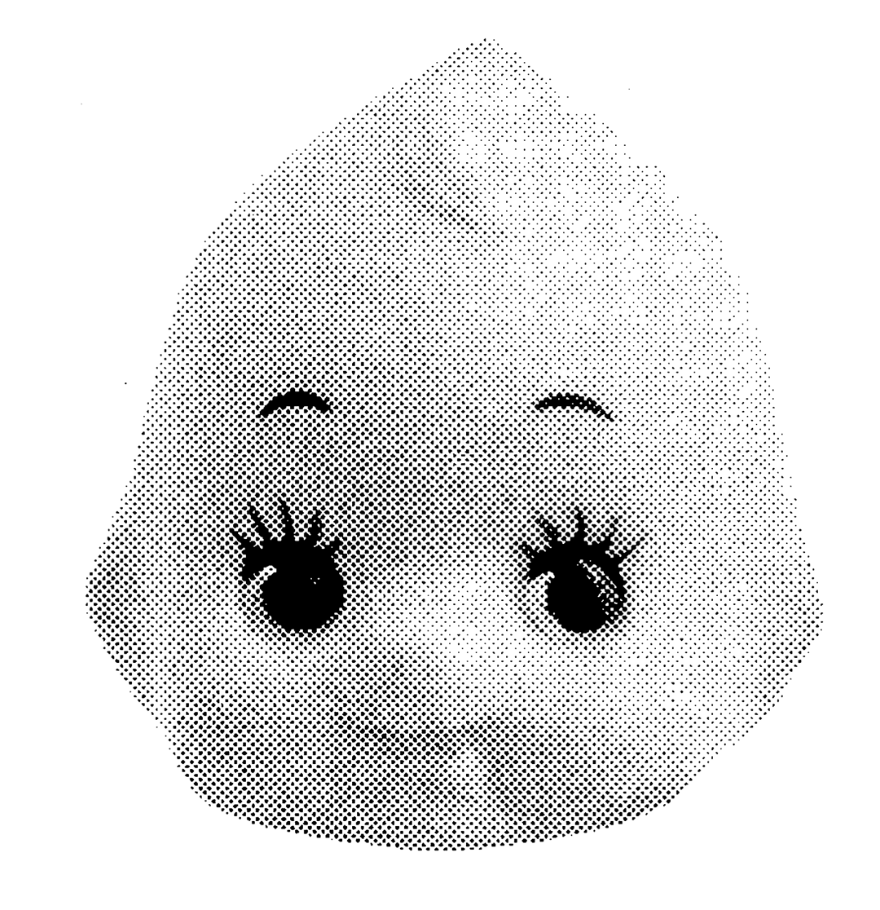

pictured above: a kewpie head for your entertainment
A tribute to...
Kewpie
wikipedia will tell you about traditional bisque kewpie dolls and a google search will take you to different gourmet sites praising kewpie mayonaise, but my tribute is to the tiny plastic kewpie figurines from japan.
sprinkled around my room are tiny kewpie dolls!
i absolutely love collecting trinkets and cute things to put in my room, and kewpies are only a small portion of what i’ve collected. my personal favorites are kewpies in different outfits, and i have a small collection of kewpie cellphone straps with different themes. my most recent addition the my collection are kewpies in various okinawa themed outfits like a pineapple and whale shark.